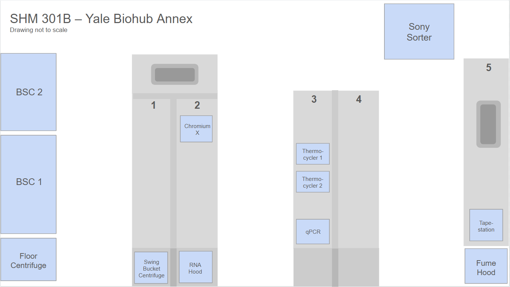

Guidelines
Annex contacts
- Meirav Sela · Tsang Lab Manager
meirav.sela@yale.edu · (203) 645-8017 - Rory Morrison-Colvin · Biohub — Flow Cytometry Coordinator
rmorrisoncolvin@biohub.org · (520) 307-5756 - Ashley Helmuth Fung · Biohub — Single-cell Coordinator
ahelmuth@biohub.org · (559) 347-4811 - John Tsang · PI
john.tsang@yale.edu · (857) 242-9326
Using this tool
- Schedule Annex space in advance. Any large experiment that needs bench or whole-Annex space should be added on the Annex usage tab ahead of time, with the dates, the bench(es) needed, and whether the whole space is required. This is a heads-up for others — not an exclusive lock, so people can still slip in to use small portions of a bench.
- Book the equipment you’ll need. Reserve instruments (BSCs, hoods, centrifuges, Chromium X, thermocyclers, qPCR, sorters, etc.) on the Equipment scheduling tab so others can see availability and avoid conflicts. Delete a booking there if your plans change.
- Track reagent & supply usage. Record what you take and add new stock in the Inventory tab — especially “batch experiments only” reagents, which must always be logged.
- Follow the space designations and safety practices below before working in the Annex.
▸Annex access
Annex access is permitted to designated individuals affiliated with Biohub and CSEI. Before performing lab work within the Annex, individuals must familiarize themselves with the guidelines here and follow them accordingly.
▸Bench designations
Benches and hoods within the Annex are designated for specific uses to minimize functional and contamination risk. Please use bench spaces for their intended functions:

Bench 2 — Pre-PCR
Use for pre-PCR steps only (e.g. 10X GEM loading and post GEM-RT cleanup). Maintain as an RNase- and post-amplification-DNA-product-free space. See the Pre-PCR / Post-PCR guidelines below.
Bench 3 — Post-PCR Library Prep
Use for post-PCR steps of 10X Genomics protocols (e.g. SPRI cleanups, library amplification, V(D)J amplification). See the Pre-PCR / Post-PCR guidelines below.
Bench 4 — Flow Prep, Post-PCR, Flex Space
▸Pre-PCR / Post-PCR guidelines
Pre-PCR
- Use for GEM generation, post-GEM-RT cleanup steps, and preparation of RNase-free / pre-PCR reagents.
- Label all reagents and supplies for use within the space as “pre-PCR.”
- Do not use supplies and pipettes from the pre-PCR space in other spaces or vice versa.
- If pipettes or supplies must be transferred across areas, only use those sitting on the open bench (not those inside the PCR hood), and thoroughly spray and wipe with DNA Zap, then RNase AWAY, then ethanol before returning them for use in the pre-PCR space.
- If reagents from the pre-PCR space must be used elsewhere, cross out the pre-PCR label and do not return them to the space.
- Before starting work, thoroughly spray and wipe all surfaces (including pipettes, racks, and tip boxes) with RNase AWAY followed by ethanol. If pipettes may have been used in non-pre-PCR spaces, spray first with DNA Zap as an extra precaution.
- To maintain their integrity, all stock reagents should only be opened in a laminar flow hood after the space has been UV-sterilized and cleaned with DNA Zap, RNase AWAY, and ethanol. Take aliquots to avoid frequent opening of the bottles.
- Always wear fresh gloves and lab coats while working in the pre-PCR space. Spray gloves with RNase AWAY and ethanol before beginning work.
- Avoid touching any non-pre-PCR-clean objects or spaces with your gloves while working — this includes your phone, hair, skin, clothes, lab coat, and protocols. If you must use your phone or take notes, take off your gloves first or use a sterilized pen/stylus while avoiding the surface of the non-sterilized object.
Post-PCR
- To minimize backward contamination of the nearby pre-PCR bench and keep the space clean for protocols requiring multiple rounds of PCR, keep the post-PCR bench clean too.
- Before and after starting work, spray and wipe all surfaces with RNase AWAY and ethanol.
- Never transfer supplies or reagents from the post-PCR area to pre-PCR.
- Do not touch or work with anything in the pre-PCR space while working in the post-PCR space. If you must switch between areas, change gloves.
▸Inventory management
Reagents and supplies in the lab are divided into three categories: “batch experiments only,” “project specific,” and “general use.”
- Batch experiments only supplies are physically separated in labelled bins and tracked carefully to ensure adequate supply during batch experiments. Only use them for pre-planned batch experiments, and always log usage in the Live Inventory (the Inventory tab of this tool).
- Project specific reagents have been purchased for specific projects and are found in bins labelled with the project name. Inventory management is the responsibility of the project lead.
- General use reagents can be used for non-batch experiments and a strict inventory is not kept, but notify the lab manager (or place a new request on LabSpend) when stock is running low.
Request new supplies on the Biohub Annex LabSpend account or by contacting the lab manager.
▸Reagent usage
- “Batch experiments only” reagents should only be used for pre-planned batch experiments. Record usage in the Live Inventory.
- Check with project leads before using reagents in project-specific bins.
- General-use reagents can be used for all projects provided the expected level of sterility/cleanliness is maintained and the lab manager is notified when stock is running low.
- Always label reagent bottles with the date opened, initials, and any use designations (e.g. pre-PCR, post-PCR, sterile).
- Stock reagents can be found on the reagent shelf. Maintain them as sterile and RNase-free. Do not work directly from stock bottles — take aliquots in the TC hood after UV sterilization and cleaning with RNase AWAY and ethanol.
▸Equipment usage
Instruments that should be scheduled before use are listed on the Equipment scheduling tab — book them there before your session.
Maintenance
- Centrifuges: turn to 22 °C after use.
▸Flow cytometer / sorter usage
This section is still being completed.
▸Lab maintenance
Everyone is responsible for cleaning up after themselves and replenishing supplies. This includes:
- Putting everything back in its original place.
- Sanitizing the station to the level expected for that station type.
- Replenishing supplies like serological pipettes, pipette tips, etc.
- Discarding empty boxes and bags in the hallway recycling.
- Refilling ethanol bottles.
▸Safety
Class II biosafety practices
- Before working in a Class II biosafety cabinet, check the airflow is on and working properly (nothing blocking grills), and that there are no spills or debris.
- Keep unnecessary materials out of the BSC.
- Disinfect before use: spray surfaces with 70% EtOH and allow to air-dry. Use UV light for ~15 min for extra precaution.
- Always wear a lab coat and gloves. Avoid touching yourself, your phone, or surfaces outside the BSC with gloves. Change gloves as necessary.
- Every time anything enters the BSC, spray or wipe it thoroughly with 70% EtOH (gloves, consumables, racks, ice buckets, etc.). When in doubt, spray with EtOH.
- Minimize moving things in and out of the BSC.
- Only use reagents marked STERILE in the BSC.
- Keep samples/reagents closed with lids when not actively in use.
- Always use clean, sterile pipette tips and ensure the tips do not touch anything (be aware of where your tip is). When in doubt, use a clean tip.
- Use bleach on any biological/liquid waste.
- Maintain waste containers for liquid and tips — keep them empty and clean.
- Disinfect after use: remove all waste and temporary materials. Spray surfaces with 70% EtOH and allow to air-dry. Turn on UV light for ~15 min. Note: UV lights do not turn off automatically — do so manually.
Working with human samples
Human samples should be processed to the extent possible within the BSC hood using Class II biosafety practices (see above).
Working with mouse samples
Mouse samples should not be processed within the Annex. If mouse samples need to be analyzed using equipment at the Annex, dissections and processing should take place in the CSEI space or another location, with only the prepared samples brought to the Annex.